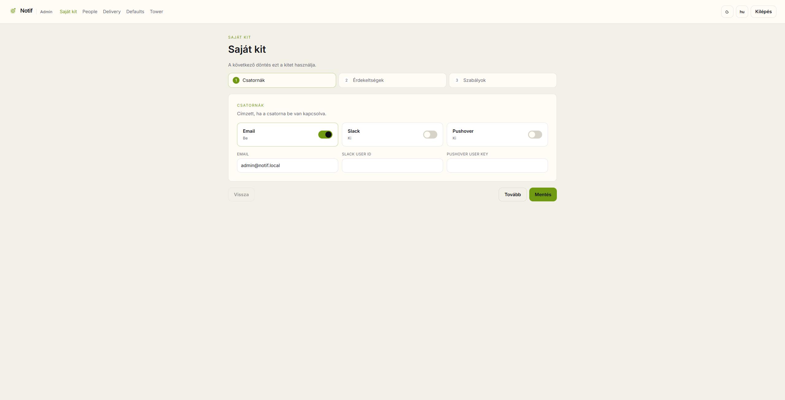

1
Saját kit megnyitása
Itt lehet áttekinteni, hogy a felhasználó milyen értesítési csatornákat kér.
Nyisd meg a Saját kit oldalt. Ez a felület a személyes értesítési beállítások központja: itt látható, mely csatornák vannak bekapcsolva, és milyen címre vagy azonosítóra történik a kiküldés.

Saját kit · Csatornák lépés
A bemutató alapján ezen a lapon nemcsak a csatornák, hanem az e-mail cím és később az érdekeltségek is áttekinthetők.